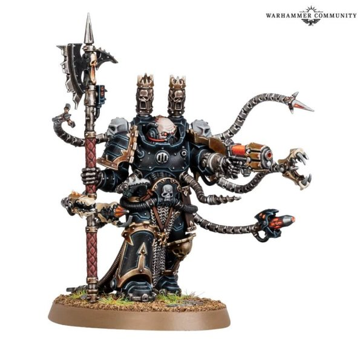
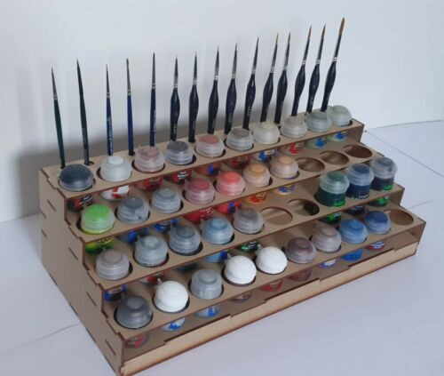
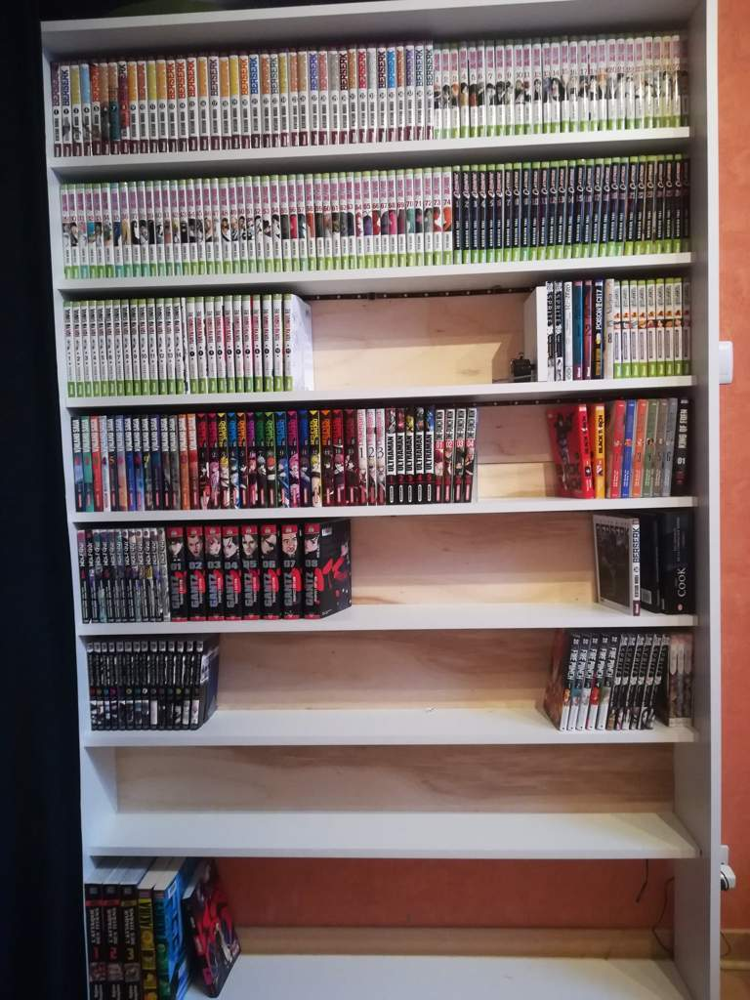
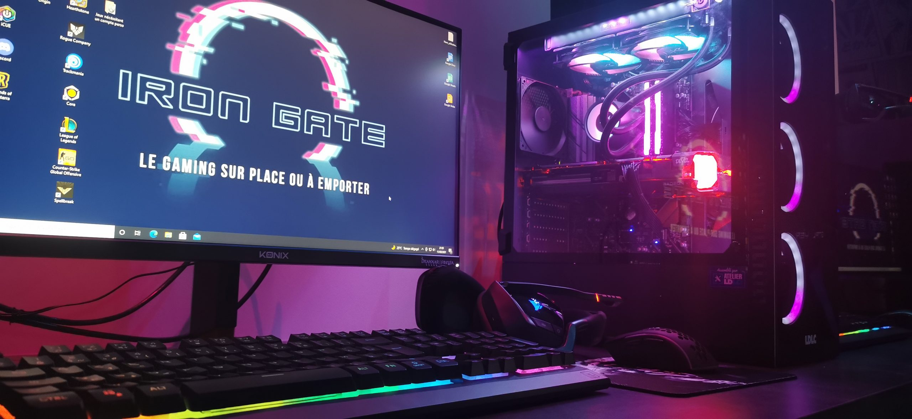

Mes centres d'interets principaux sont la peinture, les mangas, les jeux vidéos

Ma première passion dont je vais vous parler est la peinture de figurine, grâce à ces figurines on peut faire un jeu de stratégique sur plateau.
Personnellement, je ne joue pas au jeu sur plateau mais peins. Voici une partie de mon atelier de peinture. Je pratique cette activitée depuis plus de 10 ans.

Ma deuxième passion dont je vais vous parler sont les mangas. Un manga est une bande dessinée japonaise.
La plupart des mangas se conforment à un style développé au Japon. Ils se lisent de droite à gauche.
Je fais la collection depuis 1 ans maintenant. Le type de manga que j'aime son les shonens, même si j'aime presque tout type de manga.

Ma troisième passion dont je vais vous parler sont les jeux vidéos. Les jeux vidéos sont pour moi un moyen de me libérer l'espris et d'apprendre certaines notions de vie que l'on apprendre pas ailleur.
Les jeux vidéos me permettent d'apprendre l'anglais, la communication, le partage et autres.

Conclusion
My three biggest passions are painting, manga, video games. I have been painting for almost 10 years.
I have been collecting manga for 1 year now. Video games are a place for me to clear my mind.